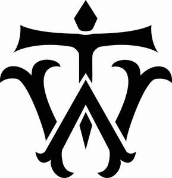

Trade Mark Journal No.2025/035 29 August 2025
UK00004250211 15 August 2025 (9,14,18,25,28,35)

- Class 9
- Fireproof clothing; Bullet-proof clothing; Bags for cameras; Laptop bags.
- Class 14
- Jewellery; Necklaces [jewellery]; Brooches [jewellery]; Jewellery brooches; Jewellery, including imitation jewellery and plastic jewellery; Pendants [jewellery]; Bracelets [jewellery]; Brooches [jewellery, jewelry (Am.)]; Ornaments [jewellery]; Amulets being jewellery; Amulets [jewellery]; Pearls [jewellery]; Trinkets [jewellery]; Jewelry; Necklaces [jewellery, jewelry (Am.)]; Fashion jewellery; Lockets [jewellery]; Gold jewellery; Brooches [jewelry]; Jewelry brooches; Brooches being jewelry; Jade [jewellery]; Clasps for jewellery; Charms [jewellery]; Charms for jewellery; Jewellery charms; Enamelled jewellery; Items of jewellery; Jewellery items; Pearls [jewellery, jewelry (Am.)]; Costume jewellery; Ornaments [jewellery, jewelry (Am.)]; Decorative brooches [jewellery]; Trinkets [jewellery, jewelry (Am.)]; Rings being jewellery; Rings [jewellery]; Amulets [jewellery, jewelry (Am.)]; Bracelets [jewellery, jewelry (Am.)]; Pewter jewellery; Jewellery stones; Cloisonné jewellery [jewelry (Am.)]; Cloisonné jewellery; Wristlets [jewellery]; Cloisonne jewellery; Charms [jewellery, jewelry (Am.)]; Lockets [jewellery, jewelry (Am.)]; Chains [jewellery, jewelry (Am.)]; Jewellery products; Rings [jewellery, jewelry (Am.)]; Ivory [jewellery, jewelry (Am.)]; Shoe jewellery; Precious jewellery; Crucifixes as jewellery; Necklaces [jewelry]; Agate as jewellery; Pins [jewellery, jewelry (Am.)]; Jewellery chains; Chains [jewellery]; Jewellery in semi-precious metals; Jewellery chain; Ivory jewellery; Medallions [jewellery, jewelry (Am.)]; Jewellery caskets; Gold plated brooches [jewellery]; Paste jewellery [costume jewelry (Am.)]; Paste jewellery [costume jewelry [Am.]]; Pins [jewellery]; Pins being jewellery; Jewellery boxes; Amber pendants being jewellery; Jewellery for personal adornment; Pendants [jewelry]; Imitation jewellery; Cabochons for making jewellery; Jewellery chain of precious metal for necklaces; Amberoid pendants being jewellery; Body jewellery; Beads for making jewellery; Gold thread [jewellery, jewelry (Am.)]; Jewelry (Paste -) [costume jewelry]; Paste jewelry [costume jewelry]; Jewellery incorporating diamonds; Personal jewellery; Jewellery for pets; Silver thread [jewellery, jewelry (Am.)]; Fake jewellery; Jewellery in non-precious metals; Plastic costume jewellery; Imitation jewellery ornaments; Hat jewellery; Clips of silver [jewellery]; Facial jewellery; Jewellery findings; Jewellery in the form of beads; Crosses [jewellery]; Sterling silver jewellery; Bracelets [jewelry]; Paste jewellery; Jewellery (Paste -); Jewellery incorporating pearls; Amulets [jewelry]; Jewellery articles; Articles of jewellery; Jewellery made from gold; Pearls [jewelry]; Jewellery made from silver; Diamond jewelry; Wire of precious metal [jewellery, jewelry (Am.)]; Jewellery chain of precious metal for anklets; Jewellery containing gold; Dress ornaments in the nature of jewellery; Lockets [jewelry]; Clasps for jewelry; Jewellery in precious metals; Jewellery of precious metals; Jewelry stickpins; Jewellery chain of precious metal for bracelets; Threads of precious metal [jewellery, jewelry (Am.)]; Trinkets [jewelry]; Artificial jewellery; Jewellery for personal wear; Decorative pins [jewellery]; Jewellery fashioned from non-precious metals; Jewellery cases; Charms [jewelry]; Jewelry charms; Charms for jewelry; Body costume jewellery; Jewellery rope chain for necklaces; Jewellery fashioned of semi-precious stones; Jewelry hatpins.
- Class 18
- Bags; Tote bags; Luggage bags; Duffle bags; Duffel bags; Carry-on bags; Toiletry bags; Bags for clothes; Drawstring bags; Carry-all bags; Nose bags [feed bags]; Bags (Nose -) [feed bags]; Belt bags and hip bags; Carrying bags; Grocery tote bags; Cross-body bags; Bags for umbrellas; Luggage, bags, wallets and other carriers; Diaper bags; Crossbody bags; Cloth bags; Bucket bags; Sling bags; Leather bags; Nappy bags; Canvas bags; Shoe bags; Duffel bags for travel; Belt bags; Clutch bags; Wheeled bags; Kit bags; Messenger bags; Travel bags; Bags for travel; Souvenir bags; Garment bags; Leather bags and wallets; Shoulder bags; Toilet bags; Make-up bags; Waterproof bags; Cosmetic bags; Reusable shopping bags; Camping bags; Umbrella bags; Makeup bags; Towelling bags; Courier bags; Bags for campers; Roll bags; Bags for carrying pets; Hand bags; Knitted bags; Gym bags; Travelling bags; Bags [envelopes, pouches] of leather, for packaging; Bags [envelopes, pouches] for packaging of leather; Bags [envelopes, pouches] of leather for packaging; Cabin bags; Attaché bags; Flight bags; Traveling bags; Beach bags; Overnight bags; Mesh shopping bags; Mesh bags for shopping; Bags for climbers; Boot bags; Leather shopping bags; Canvas shopping bags; Frames for bags [structural parts of bags]; Bum bags; Hiking bags; Knitting bags; Wash bags for carrying toiletries; Suit bags; Roller bags; Nose bags; Baby carrying bags; Feed bags; Hunting bags; Gladstone bags; Waist bags.
- Class 25
- Clothing; Knitwear [clothing]; Jackets [clothing]; Ready-to-wear clothing; Woolen clothing; Furs [clothing]; Garments for protecting clothing; Layettes [clothing]; Clothing layettes; Linen clothing; Headbands [clothing]; Headbands for clothing; Gloves [clothing]; Gloves as clothing; Clothes; Aprons [clothing]; Maternity clothing; Kerchiefs [clothing]; Jerseys [clothing]; Denims [clothing]; Shorts [clothing]; Cashmere clothing; Capes (clothing); Oilskins [clothing]; Gabardines [clothing]; Leather clothing; Clothing of leather; Leather (Clothing of -); Silk clothing; Parts of clothing, footwear and headgear; Collars [clothing]; Veils [clothing]; Knitted clothing; Hoods [clothing]; Windproof clothing; Corsets [clothing, foundation garments]; Embroidered clothing; Wristbands [clothing]; Belts [clothing]; Belts for clothing; Rainproof clothing; Bandeaux [clothing]; Casual clothing; Waterproof clothing; Visors [clothing]; Jackets being sports clothing; Jackets (Stuff -) [clothing]; Stuff jackets [clothing]; Bottoms [clothing]; Playsuits [clothing]; Clothing for leisure wear; Ready-made clothing; Latex clothing; Trunks being clothing; Woven clothing; Infant clothing; Drawers [clothing]; Drawers as clothing; Leisure clothing; Clothing for sports; Sports clothing; Ties [clothing]; Clothing for children; Athletic clothing; Muffs [clothing]; Bodies [clothing]; Clothing for babies; Tops [clothing]; Clothing for infants; Clothing for cycling; Weatherproof clothing; Pockets for clothing; Fabric belts [clothing]; Water-resistant clothing; Triathlon clothing; Handwarmers [clothing]; Clothing for skiing; Beach clothing; Thermal clothing; Cowls [clothing]; Chaps (clothing); Men's clothing; Fishing clothing; Dance clothing; Mitts [clothing]; Braces for clothing.
- Class 28
- Clothing for dolls; Doll clothing; Bowls bags; Bag stands for golf bags; Punching bags; Bags for skateboards; Golf bags; Bags for fishing.
- Class 35
- Retail services connected with the sale of clothing and clothing accessories.
Alan Hasan